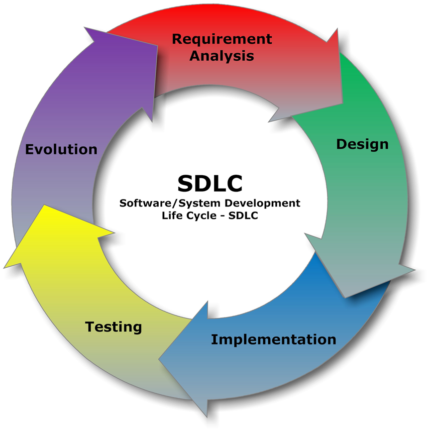

One of the important things in software development is the conception of the Software Development Life-Cycle (SDLC)  . One thing after another and here we go, software development models was designed. Better to know them personally:
Don't forget, folks! Requirements should be: